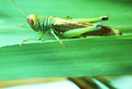

PESTS OF RICE (BORERS AND FOLIAGE FEEDERS) :: Minor Pests :: Grasshopper
11. Grasshopper: Hieroglyphus banian (Acrididae: Orthoptera)
Damage symptoms: The nymphs and adults cause enormous loss to the crop by chewing and cutting various plant portion viz., leaves, flowers and grains. They completely defoliate the plants leaving only the mid ribs and the plant growth is affected. |
 |
Management
- Expose the eggs to be picked up by birds after ploughing and trimming the bunds
- Egg parasitoids Cacallus spp., Barycomus spp. and Seelio spp., should be encouraged.
- Dust the crop with 5-10% BHC (or) methyl parathion 2% or lindane 2 D 25-30 kg/ha (or) malathion 5 D 20 kg/ha
- Spray dichlorvos 76 EC 500 ml/ha (or) malathion 50 EC 2.5 lit/ha.